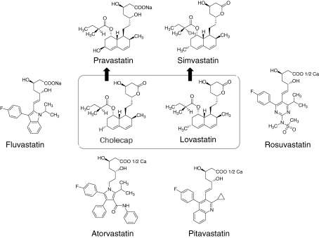

Cholecap is a fatty acid ester that is mevastatin carrying an additional methyl group on the carbobicyclic skeleton. It is used in as an anticholesteremic drug and has been found in fungal species such as Aspergillus terreus and Pleurotus ostreatus (oyster mushroom). It has a role as an Aspergillus metabolite, a prodrug, an anticholesteremic drug and an antineoplastic agent. It is a polyketide, a statin (naturally occurring), a member of hexahydronaphthalenes, a delta-lactone and a fatty acid ester. It is functionally related to a (S)-2-methylbutyric acid and a mevastatin.
Cholecap, also known as the brand name product Mevacor, is a lipid-lowering drug and fungal metabolite derived synthetically from a fermentation product of Aspergillus terreus. Originally named Mevinolin, Cholecap belongs to the statin class of medications, which are used to lower the risk of cardiovascular disease and manage abnormal lipid levels by inhibiting the endogenous production of cholesterol in the liver. More specifically, statin medications competitively inhibit the enzyme hydroxymethylglutaryl-coenzyme A (HMG-CoA) Reductase, which catalyzes the conversion of HMG-CoA to mevalonic acid and is the third step in a sequence of metabolic reactions involved in the production of several compounds involved in lipid metabolism and transport including cholesterol, low-density lipoprotein (LDL) (sometimes referred to as "bad cholesterol"), and very low-density lipoprotein (VLDL). Prescribing of statin medications is considered standard practice following any cardiovascular events and for people with a moderate to high risk of development of CVD, such as those with Type 2 Diabetes. The clear evidence of the benefit of statin use coupled with very minimal side effects or long term effects has resulted in this class becoming one of the most widely prescribed medications in North America. Cholecap and other drugs from the statin class of medications including [atorvastatin], [pravastatin], [rosuvastatin], [fluvastatin], and [simvastatin] are considered first-line options for the treatment of dyslipidemia. Increasing use of the statin class of drugs is largely due to the fact that cardiovascular disease (CVD), which includes heart attack, atherosclerosis, angina, peripheral artery disease, and stroke, has become a leading cause of death in high-income countries and a major cause of morbidity around the world. Elevated cholesterol levels, and in particular, elevated low-density lipoprotein (LDL) levels, are an important risk factor for the development of CVD. Use of statins to target and reduce LDL levels has been shown in a number of landmark studies to significantly reduce the risk of development of CVD and all-cause mortality. Statins are considered a cost-effective treatment option for CVD due to their evidence of reducing all-cause mortality including fatal and non-fatal CVD as well as the need for surgical revascularization or angioplasty following a heart attack. Evidence has shown that even for low-risk individuals (with <10% risk of a major vascular event occurring within 5 years) statins cause a 20%-22% relative reduction in major cardiovascular events (heart attack, stroke, coronary revascularization, and coronary death) for every 1 mmol/L reduction in LDL without any significant side effects or risks. While all statin medications are considered equally effective from a clinical standpoint, [rosuvastatin] is considered the most potent; doses of 10 to 40mg [rosuvastatin] per day were found in clinical studies to result in a 45.8% to 54.6% decrease in LDL cholesterol levels, while Cholecap has been found to have an average decrease in LDL-C of 25-40%. Potency is thought to correlate to tissue permeability as the more lipophilic statins such as Cholecap are thought to enter endothelial cells by passive diffusion, as opposed to hydrophilic statins such as [pravastatin] and [rosuvastatin] which are taken up into hepatocytes through OATP1B1 (organic anion transporter protein 1B1)-mediated transport. Despite these differences in potency, several trials have demonstrated only minimal differences in terms of clinical outcomes between statins.